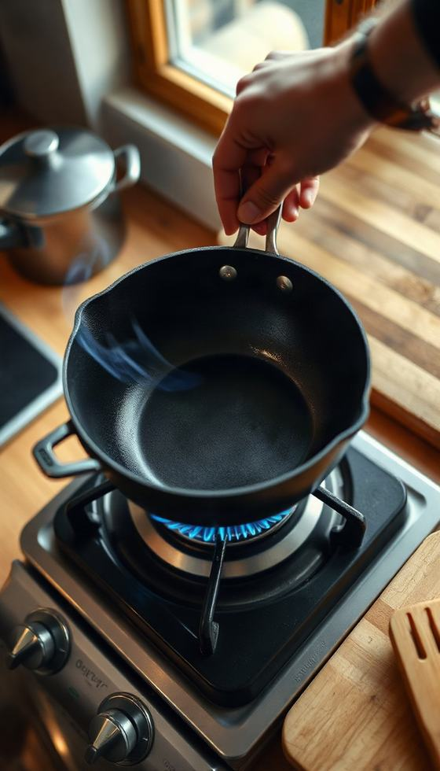
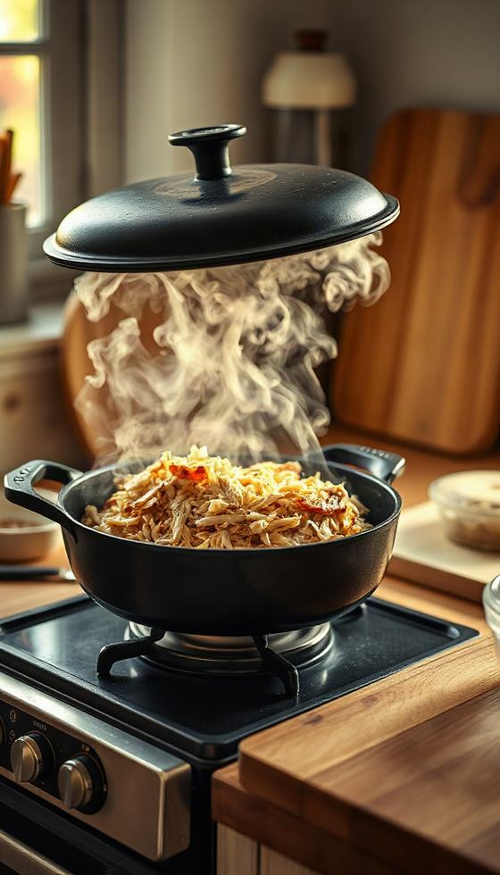
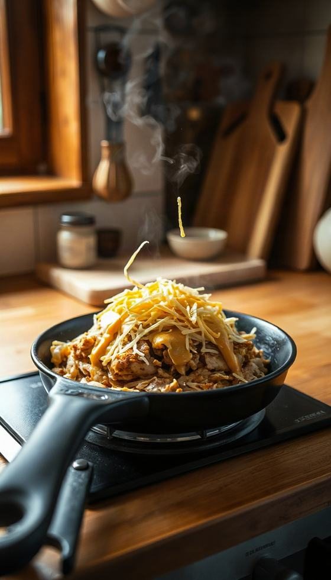
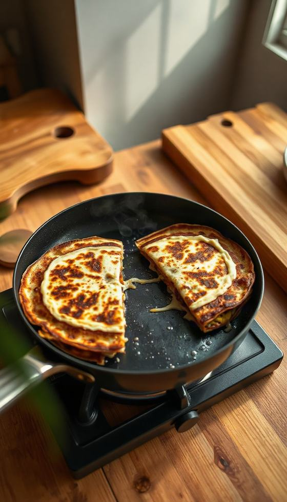

Speedrun
Copycat Taco Bell Quesadilla: Leftover Turkey Edition
About $4.85* · 2 servings · 12 min
*Prices are estimates and may differ from what you pay. How we price recipes
Leftover turkey became crispy copycat Taco Bell quesadillas, $2.42 each.





Ingredients
- 150 g leftover cooked turkey, shredded (about 1 heaping cup)
- 2 large (10-inch) flour tortillas
- 90 g block cheddar or mozzarella, shredded (about 1 cup)
- 3 tbsp mayonnaise
- 1 tbsp pickled jalapeños, finely chopped
- 1 tbsp pickled jalapeño brine
- 1/2 tsp paprika
- 1/2 tsp ground cumin
- 1/4 tsp garlic powder
- 2 tbsp water
- 1 tbsp butter
Steps
- Minute 0: In a small bowl stir 3 tbsp mayo, 1 tbsp chopped pickled jalapeños, 1 tbsp jalapeño brine, 1/2 tsp paprika, 1/2 tsp cumin and 1/4 tsp garlic powder. That's the copycat Creamy Jalapeño Sauce.
- Minute 1: Heat a 12-inch nonstick skillet over medium. Add the shredded turkey and 2 tbsp water, cover and steam 3 minutes, stirring once, until steaming hot all the way through (74°C / 165°F). Tip it onto a plate and wipe the pan dry.
- Minute 4: Lay out both tortillas. On one half of each, layer a quarter of the cheese, half the turkey, 1 tbsp sauce, then another quarter of the cheese. Fold each tortilla over into a half-moon.
- Minute 6: Melt the butter in the same skillet over medium. Add both folded quesadillas side by side, straight edges in the middle. Cook 2 to 3 minutes, pressing with a spatula, until deep golden underneath.
- Minute 9: Flip both. Cook 2 more minutes until golden and the cheese is fully melted.
- Minute 11: Slide onto a board, rest 30 seconds, cut each into 3 wedges and serve with the leftover sauce for dipping. Timer stops at 12:00.
What you'll need
Gear links go to Amazon (Amazon.ca, or Amazon.com in the US). As an Amazon Associate I earn from qualifying purchases, at no extra cost to you.
Watch the videoMore $5 recipes
About the prices: they're estimates, not quotes. Since Nov 2026 they're based on Statistics Canada's monthly average retail prices where an item is listed (Open Government Licence - Canada), otherwise on typical Canadian grocery prices, and count only the amount of each ingredient used, not whole packages. What you pay will vary by store, location, brand, sales, taxes and date, and any pantry staples you need to buy will add to it. Recipe visuals and narration are AI-generated.